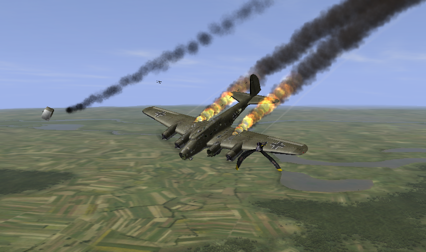
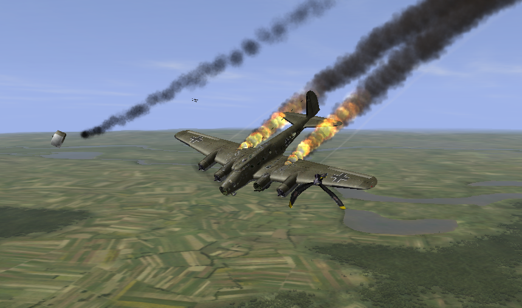

Ил 2 Штурмовик

Год выпуска: 2001
Жанр: Авиасимулятор
Разработчик: 1С
Язык: Русский
Тип издания: Лицензия
Минимальные требования
Система: Windows® XP/2000 (only)
Процессор: Pentium® III or AMD Athlon™ 1 GHz
Оперативная память: 512 MB
Видеокарта: DirectX® 9 compliant with 64 MB RAM
Звуковая карта: DirectX 9 compliant
Место на диске: 1.1+ GB
Об игре
Ил-2 Штурмови́к (англ. IL-2 Sturmovik) — авиасимулятор, игра разработана российской компанией 1С: Maddox Games и издана в России компанией 1С в 2001 году (в том же году вышла в Европе, издатель Ubisoft Entertainment). Эта компьютерная игра моделирует ведение боевых действий в небе в период с 1938 по 1946 годы. По заявлениям некоторых представителей прессы и игровых изданий, «Ил-2 Штурмовик» не имеет себе равных. На момент выхода это была самая высокотехнологичная игра в своём жанре и оставалась таковой длительное время. «Ил-2 Штурмовик» привязан к наиболее широкомасштабным сражениям Великой Отечественной войны. Игра имеет множество наград от зарубежных и российских, электронных и печатных изданий, освещающих компьютерные игры. Каждая кампания содержит специфический набор сценариев и миссий, зависящих как от выбранного типа самолёта, так и от стороны, которая выбрана игроком. Существует несколько типов кампаний, но базово можно выделить 3 типа — истребитель, штурмовик, бомбардировщик. Также каждый из этих 3 типов компаний сам может далее подразделяться на страну, за которую играет игрок и подразделение (например, играя за США игрок может далее выбирать одно из подразделений морской авиации или сухопутных войск). К примеру, лётчикам люфтваффе придётся сконцентрироваться на воздушных боях, перехвате бомбардировщиков противника и эскортировании самолётов, а пилоты Ил-2 в основном будут «работать» по наземным целям: уничтожать вражескую бронетехнику, разрушать мосты и ликвидировать аэродромы.


 
